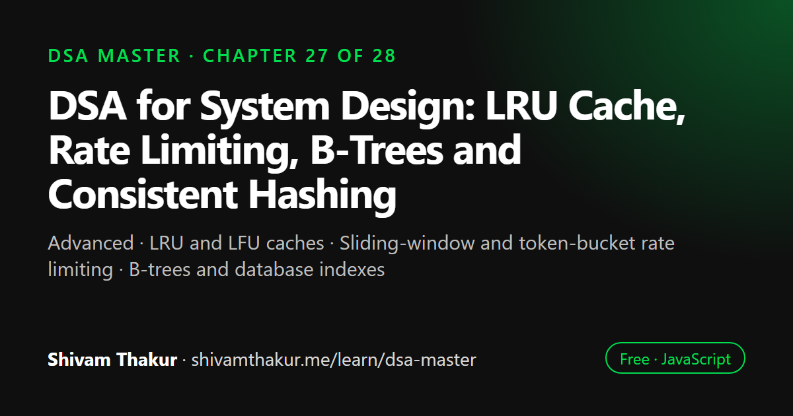

Chapter 27 of 28 · Advanced
DSA for System Design: LRU Cache, Rate Limiting, B-Trees and Consistent Hashing
System Design Connections for DSA

The data structures used in coding interviews are the same ones inside real production systems. This chapter connects them: an LRU cache built from a hash map and a doubly linked list, sliding-window and token-bucket rate limiters, B-trees behind database indexes, consistent hashing for load balancing, and distributed concepts such as Bloom filters.
In this chapter you will learn
- LRU and LFU caches
- Sliding-window and token-bucket rate limiting
- B-trees and database indexes
- Consistent hashing
- Translating interview patterns into system design
27.0 Why This Chapter Exists
Every structure and algorithm in this book has been presented as a solution to a specific access-pattern problem. This chapter's purpose is to make explicit what's been implicit throughout: the exact same reasoning you've built for choosing a data structure in a coding problem is the reasoning senior engineers use to make real production system design decisions. A cache eviction policy, a database index, a rate limiter, a load balancer's routing algorithm — these are not new concepts. They are this book's structures, deployed at a different scale, for a business reason instead of an interview question.
27.1 Caching: LRU/LFU as Direct Applications of Chapters 4, 5, and 9
27.1.1 LRU Cache: The Direct Payoff of Chapter 5's Doubly Linked List Preview
Recall Chapter 5, section 5.3.2's forward reference: "LRU caches" as a canonical real-world use case for a doubly linked list. This chapter delivers on that promise in full production context.
The business problem: a cache has limited capacity; when full, it must evict something to make room for a new entry. Least Recently Used (LRU) evicts whichever entry hasn't been accessed in the longest time — the intuition being that recently-accessed data is statistically more likely to be accessed again soon (a real, empirically-supported principle called "temporal locality").
class LRUCache {
#capacity;
#map = new Map(); // key -> DoublyListNode (Chapter 4's Map + Chapter 5's doubly linked list!)
#head; // most recently used (MRU) sentinel
#tail; // least recently used (LRU) sentinel
constructor(capacity) {
this.#capacity = capacity;
this.#head = { key: null, value: null, prev: null, next: null };
this.#tail = { key: null, value: null, prev: null, next: null };
this.#head.next = this.#tail;
this.#tail.prev = this.#head;
}
#remove(node) {
node.prev.next = node.next;
node.next.prev = node.prev;
}
#insertAtFront(node) {
node.next = this.#head.next;
node.prev = this.#head;
this.#head.next.prev = node;
this.#head.next = node;
}
get(key) {
if (!this.#map.has(key)) return -1;
const node = this.#map.get(key);
this.#remove(node);
this.#insertAtFront(node); // move to MRU position — accessing counts as "using"
return node.value;
}
// Time: O(1) — Chapter 5's key lesson: doubly linked list deletion given a node reference
put(key, value) {
if (this.#map.has(key)) {
this.#remove(this.#map.get(key));
} else if (this.#map.size >= this.#capacity) {
const lru = this.#tail.prev;
this.#remove(lru);
this.#map.delete(lru.key); // evict the LEAST recently used entry
}
const newNode = { key, value, prev: null, next: null };
this.#insertAtFront(newNode);
this.#map.set(key, newNode);
}
// Time: O(1)
}27.1.2 LFU Cache: A Direct Payoff of Chapter 9's Heap (or a Cleverer Alternative)
Least Frequently Used (LFU) evicts whichever entry has been accessed the fewest times (not longest ago). The "obvious" implementation reaches for Chapter 9's heap (tracking access counts, evicting the minimum) — but a genuinely clever alternative achieves O(1) using a combination of hash maps and Chapter 5's doubly linked lists, one list per frequency count, worth knowing exists as an example of "the heap-based solution is correct but not always optimal — sometimes a cleverer structural combination beats the obvious choice."
27.2 Rate Limiting: Sliding Windows and Token Buckets
Direct Callback to Chapter 3's Sliding Window
The business problem: prevent a single client from making more than N requests per time window (protecting a service from abuse or overload). This is precisely Chapter 3's sliding window pattern, applied to a stream of timestamps instead of an array.
class SlidingWindowRateLimiter {
#requestLog = new Map(); // clientId -> array of request timestamps
#maxRequests;
#windowMs;
constructor(maxRequests, windowMs) {
this.#maxRequests = maxRequests;
this.#windowMs = windowMs;
}
allowRequest(clientId, now = Date.now()) {
if (!this.#requestLog.has(clientId)) {
this.#requestLog.set(clientId, []);
}
const timestamps = this.#requestLog.get(clientId);
const windowStart = now - this.#windowMs;
// SLIDE the window: remove timestamps that have aged out (Chapter 3/21's technique!)
while (timestamps.length > 0 && timestamps[0] <= windowStart) {
timestamps.shift(); // NOTE: O(n) with a plain array — a real Deque (Chapter 6) is better in production!
}
if (timestamps.length < this.#maxRequests) {
timestamps.push(now);
return true; // request ALLOWED
}
return false; // rate limit EXCEEDED
}
}27.3 Database Indexing: B-Trees as Production Cousins of Chapter 8's BST
Why Databases Don't Use Plain BSTs
Recall Chapter 8's honest treatment of BST degeneration and the conceptual introduction to AVL/Red-Black trees as the self-balancing fix. Production databases use a related but distinct structure: the B-Tree (and its common variant, the B+ Tree), specifically because of a factor Chapter 5 introduced but databases take to an extreme: disk I/O cost, not just comparison count, dominates real-world performance.
27.4 Load Balancing: Consistent Hashing as an Evolution of Chapter 4
The Problem Plain Hashing Creates at Scale
The business problem: distribute requests (or data) across N servers, using something like hash(key) % N to decide which server handles a given key — Chapter 4's hashing, applied to routing instead of storage. The catastrophic failure mode: if a server is added or removed (changing N), hash(key) % N changes for almost every single key, forcing a massive, disruptive redistribution of nearly all cached data or connections simultaneously — a direct, painful real-world consequence of the exact hash-bucket-assignment mechanism covered in Chapter 4.
27.5 Distributed Systems Concepts Built on This Book's Foundations
27.5.1 Distributed Rate Limiting: Union-Find's Conceptual Cousin
A genuinely interesting connection: tracking "which servers are part of the same currently-healthy cluster" during a network partition (a distributed systems scenario) is conceptually similar to Chapter 14's Union-Find "which group does this belong to" question — though real distributed systems solve this with dedicated consensus protocols (Raft, Paxos) rather than literal Union-Find, the underlying question being asked ("are these nodes currently in the same connected/agreeing group?") is recognizably the same shape.
27.5.2 Message Queues: Chapter 6's Queue, at Massive Scale
Production message queue systems (Kafka, RabbitMQ, SQS) are, at their conceptual core, exactly Chapter 6's Queue — FIFO processing of work items — scaled to distributed, persistent, fault-tolerant infrastructure. The core guarantee they provide (process work in the order it arrived, or in a well-defined priority order via Chapter 9's heap-like priority queue concepts) is identical to this book's foundational structures; the engineering added on top (durability, replication, exactly-once delivery semantics) is what production systems contribute beyond the core DSA concept.
27.5.3 Distributed Caching and Consensus: Where This Book's Techniques End and New Territory Begins
An Honest Boundary Statement
It's worth being explicit about where this chapter's connections stop being direct extensions and start requiring genuinely new knowledge: distributed consensus (how multiple servers agree on a single value despite network failures and delays), replication strategies, and CAP theorem trade-offs are NOT direct extensions of this book's single-machine data structures — they involve fundamentally new concerns (network partitions, message ordering across machines, Byzantine fault tolerance) that this book's DSA foundation prepares you to understand the vocabulary and mechanisms of (queues, trees, hashing all reappear as building blocks), but does not itself teach. This is the honest, appropriate scope boundary for this chapter: showing where DSA foundations connect to system design, not attempting to teach system design or distributed systems as complete subjects in their own right.
27.6 A Decision Framework: Translating "Interview Problem" Instincts Into "System Design" Instincts
The Single Most Important Mindset Shift
Every "which data structure should I use" decision you've practiced throughout this book is fundamentally the same decision a system architect makes when choosing a caching strategy, a database index type, or a message queue configuration — just at a different scale, with different concrete constraints (network latency instead of CPU cycles, disk I/O instead of RAM access, distributed failure modes instead of single-process correctness). The access-pattern-first thinking this book has trained since Chapter 1 — "what operations does this system need to do most often, and what structure makes those operations cheap?" — is the exact same question, asked at a different altitude.
27.7 Chapter Summary
This chapter made explicit the connection between this book's algorithmic foundations and real production system design, organized around the principle that every system design decision covered here is a direct, recognizable extension of a structure or pattern already built in earlier chapters, not a new body of knowledge to learn from scratch. LRU caching delivered on Chapter 5's forward reference to doubly linked lists, demonstrating that neither Chapter 4's Map nor Chapter 5's linked list alone solves the problem — the specific combination, chosen because each piece provides exactly the O(1) capability the other lacks, is itself the solution, a concrete instance of this book's recurring composition theme. LFU caching's heap-based (Chapter 9) baseline, contrasted against a cleverer O(1) hash-map-plus-linked-list alternative, modeled the genuine engineering judgment call between "correct and simple" versus "more complex but asymptotically better," rather than presenting a single "right" answer.
Rate limiting demonstrated one of this chapter's clearest pattern-transfer moments: the sliding window rate limiter is structurally identical to Chapter 21's monotonic queue technique, simply counting items in a time window instead of tracking a maximum value — direct, recognizable proof that the "same shape, different words" skill this book has cultivated since Chapter 7 extends into recognizing production requirements as disguised algorithm patterns, not just recognizing other algorithm problems. The token bucket alternative demonstrated that system design, like algorithm selection, involves genuine trade-off judgment (strict guarantees versus burst tolerance), not a single universally correct choice.
Database indexing extended Chapter 5 and Chapter 8's lessons about cache locality and tree balancing to their logical, real-world conclusion: B-Trees exist specifically because disk I/O cost (not comparison count) dominates real database performance, making a wide-branching-factor tree genuinely superior to a binary tree at the same Big-O height class — a direct, concrete lesson that Big-O's deliberate blindness to constant factors sometimes hides the single most important real-world consideration, extending Chapter 5's array-versus-linked-list cache-locality point to an even more extreme, production-relevant scale. Consistent hashing extended Chapter 4's hashing lesson to solve a failure mode plain modulo-hashing creates at scale (catastrophic full redistribution on any topology change), using a ring structure whose key-to-server lookup is recognizably Chapter 16's lower-bound binary search technique in a new context.
We closed with an honest scope boundary — genuinely distributed concerns like consensus protocols and CAP theorem trade-offs are new territory this book's single-machine foundations inform but don't themselves teach — and a master translation table mapping this book's core "which structure fits this access pattern" instincts directly onto their system-design equivalents, reinforcing this chapter's central thesis: the reasoning is identical; only the scale and concrete constraints differ.
27.8 Revision Notes
- LRU cache combines Chapter 4's Map (O(1) key lookup) with Chapter 5's doubly linked list (O(1) reordering and eviction given a direct node reference) — neither alone solves the problem; the combination is the solution.
- LFU cache's heap-based (Chapter 9) approach is correct but not asymptotically optimal; an O(1) alternative exists via nested hash maps and linked lists — a genuine "simple vs. more complex but better" engineering trade-off.
- Sliding window rate limiting is structurally identical to Chapter 21's monotonic queue technique, counting items in a window rather than tracking a maximum.
- Token bucket rate limiting offers a genuinely different trade-off (burst tolerance) versus sliding window's strict guarantee — not a strictly better or worse choice, a different fit for different requirements.
- B-Trees (used by databases) extend Chapter 5/8's cache-locality and tree-balancing lessons: wide branching factor minimizes disk I/O operations, a different optimization target than minimizing comparisons, despite matching Big-O height classes.
- Consistent hashing solves plain hash-modulo's catastrophic full-redistribution failure mode at scale, using a ring structure whose lookup recognizably reuses Chapter 16's lower-bound binary search technique.
- Genuinely distributed concerns (consensus, CAP theorem) are new territory beyond this book's single-machine foundations — an honest scope boundary, not a gap to paper over.
27.9 Mind Map (ASCII)
SYSTEM DESIGN CONNECTIONS
|
+------------------+-------+-------+------------------------+
| | | |
CACHING RATE LIMITING DATABASE LOAD BALANCING
| | INDEXING |
LRU = Ch.4 Map Sliding window | Consistent Hashing
(O(1) lookup) + = Ch.21's B-Trees extend = Ch.4 hashing,
Ch.5 doubly MONOTONIC QUEUE Ch.5/Ch.8's cache evolved to avoid
linked list (count instead locality/balancing catastrophic full
(O(1) reorder/ of max!) lessons: wide redistribution on
evict) -- | branching = fewer topology change
NEITHER ALONE Token Bucket: DISK I/O ops, not |
suffices, the DIFFERENT fewer comparisons Ring lookup =
COMBINATION is trade-off | Ch.16's LOWER
the solution (burst tolerance Big-O ignores BOUND binary
| vs strict limit) constant factors -- search, reused
LFU = Ch.9 heap disk I/O dominates in a new context
(correct, O(log n)) at THIS scale
vs O(1) alt (more (Ch.5 cache
complex, hash+ locality, taken
linked-list combo) further)
|
Engineering judgment:
simple+correct vs
complex+optimal
DISTRIBUTED SYSTEMS
(HONEST BOUNDARY):
Message queues = Ch.6
Queue at scale.
Consensus/CAP theorem =
NEW territory beyond
this book's single-
machine foundations
|
MASTER TRANSLATION TABLE:
"which structure fits this
access pattern" = SAME
question at every scale27.10 Cheat Sheet
SYSTEM DESIGN <- -> DSA TRANSLATION TABLE
=============================================
LRU Cache -> Ch.4 Map + Ch.5 Doubly Linked List (O(1) lookup + reorder/evict)
LFU Cache -> Ch.9 Heap (simple) or hash-map+linked-list combo (O(1), complex)
Rate Limiting -> Ch.21 Monotonic Queue (sliding window) or Token Bucket (bursts OK)
Database Indexing -> Ch.8 BST concept, evolved to B-Trees (minimize DISK I/O, not comparisons)
Load Balancing -> Ch.4 Hashing, evolved to Consistent Hashing (avoid full redistribution)
+ Ch.16 binary search for ring lookup
Message Queues -> Ch.6 Queue, at distributed scale
Cluster Membership -> Conceptually similar to Ch.14 Union-Find's "same group?" question
Autocomplete/Routing -> Ch.10 Tries (prefix-based lookup)
Analytics Dashboards -> Ch.23 Segment/Fenwick Trees (range query + update together)
Capacity Planning -> Ch.16 Binary search on the answer (monotonic checkable constraint)
Memoized Computations-> Ch.2/18-19 DP (avoid redundant recomputation), DB materialized views
KEY LESSON: BIG-O IGNORES CONSTANT FACTORS -- SOMETIMES THOSE FACTORS ARE EVERYTHING
========================================================================================
RAM vs disk I/O (Ch.5 cache locality, taken to B-Tree extreme):
disk latency ~100,000x slower than RAM -> minimize DISK READS, not just comparisons
HONEST SCOPE BOUNDARY
=========================
Distributed consensus (Raft, Paxos), CAP theorem, Byzantine fault tolerance =
NEW territory this book's single-machine DSA foundation INFORMS but does NOT teach.27.11 Key Takeaways
- LRU caching is a genuine composition of two structures (Map + doubly linked list), neither sufficient alone — a model for how real system design often requires combining tools, not picking one.
- Rate limiting's sliding window is literally Chapter 21's monotonic queue technique in a business costume — the "same shape, different words" skill extends to recognizing production requirements, not just other algorithm problems.
- Database B-Trees extend Chapter 5's cache-locality lesson to its logical conclusion: at disk-I/O scale, minimizing block reads (not comparisons) is the real optimization target, even at matching Big-O height classes.
- Consistent hashing evolves Chapter 4's hashing to solve a real failure mode (catastrophic redistribution) that plain modulo-hashing creates at scale.
- This book's core question — "what access pattern does this system need, and what structure makes those operations cheap?" — is the same question asked at every scale, from a coding interview to a production system architecture decision.
27.12 20 Multiple Choice Questions
Tap an answer to check it. Your score updates as you go.
Score: 0 / 0 answered (20 questions)
What two data structures combine to implement an O(1) LRU cache?
Why does an LRU cache need BOTH structures, rather than either alone?
What earlier chapter's forward reference does the LRU cache implementation deliver on?
What data structure does a simple LFU cache implementation typically use?
What earlier chapter's pattern is the sliding window rate limiter structurally identical to?
What genuine trade-off does the Token Bucket rate limiter offer compared to a sliding window?
Why do production databases use B-Trees instead of plain binary search trees?
What earlier chapter's lesson does the B-Tree design extend?
What problem does plain
hash(key) % Ncreate when the number of servers N changes?What does consistent hashing solve?
What earlier chapter's technique does a consistent hash ring's key-to-server lookup resemble?
What real-world system is conceptually "Chapter 6's Queue, at massive scale"?
What honest scope boundary does this chapter draw regarding distributed systems?
What is the central mindset shift this chapter aims to establish?
What system design concern maps to "I need fast prefix-based lookup" (Chapter 10)?
What system design concern maps to "I need range queries AND updates together" (Chapter 23)?
Why is disk I/O latency specifically relevant to why databases favor B-Trees?
What genuine engineering judgment does the LFU cache section model?
What concept from Chapter 14 is conceptually similar to distributed cluster membership tracking?
What is the overarching principle this entire chapter is built around?
Show the answer key
1-b, 2-b, 3-b, 4-b, 5-b, 6-b, 7-b, 8-b, 9-b, 10-b, 11-b, 12-b, 13-b, 14-b, 15-b, 16-b, 17-a, 18-b, 19-a, 20-b
27.13 20 Coding Problems
Easy
- Implement
LRUCachefrom memory (section 27.1.1), and verify itsget/putoperations behave correctly across a sequence of accesses. - Implement
SlidingWindowRateLimiterfrom memory (section 27.2), and verify it correctly rejects requests exceeding the limit within a window. - Implement
TokenBucketRateLimiterfrom memory (section 27.2), and verify it allows a burst of requests up to the bucket's capacity. - Write a function to simulate
hash(key) % Nserver assignment, and demonstrate how many keys change their assigned server when N changes by 1. - Implement a basic
ConsistentHashRing'saddServerandgetServerForKeyfrom memory (section 27.4).
Medium
- Extend
LRUCacheto support adelete(key)operation, maintaining all O(1) guarantees. - Implement an LFU cache using Chapter 9's heap (frequency-tracking), and compare its complexity against the conceptual O(1) hash-map-based alternative described in section 27.1.2.
- Implement
ConsistentHashRing'sremoveServer, and empirically demonstrate (with a test) that removing one server only reassigns keys that were mapped to it, not a large fraction of all keys. - Given a simulated "disk block size" constraint, implement a simplified B-Tree node structure (many keys per node) and compare its height against an equivalent binary search tree for the same total key count.
- Implement a simple message queue (FIFO) with a maximum size, rejecting new messages when full (a direct application of Chapter 6's Queue with a capacity constraint).
Hard
- Implement the full O(1) LFU cache using nested hash maps and linked lists (frequency -> doubly linked list of keys at that frequency), as conceptually described in section 27.1.2.
- Given a simulated distributed cache cluster, implement consistent hashing with "virtual nodes" (each physical server mapped to multiple positions on the ring, improving load distribution evenness) and empirically compare load balance with and without virtual nodes.
- Implement a priority-based message queue (using Chapter 9's heap) where messages have priority levels, and higher-priority messages are always processed first, regardless of arrival order.
- Given a simulated rate limiter needing to work correctly across multiple server instances (a distributed rate limiter), describe (with a simplified shared-state implementation) how you'd coordinate rate limit counts across instances, discussing the trade-offs versus a per-instance-only rate limiter.
- Implement a basic "materialized view" simulation: given a base dataset and a query pattern that's run frequently, precompute and cache the query result (directly applying Chapter 2/18-19's memoization philosophy to a database-adjacent context), invalidating the cache when the base data changes.
Interview Level
- (Google-level) Design and implement a URL shortener's caching layer, using an LRU cache for frequently-accessed short URLs, discussing cache size trade-offs and eviction policy choices.
- (Amazon-level) Design and implement a rate limiter for an e-commerce API, choosing between sliding window and token bucket based on the specific business requirement (e.g., "no more than 100 requests per minute, hard limit" vs. "allow bursts during flash sales, but average out over time"), justifying your choice explicitly in comments.
- (Microsoft-level) Design a document collaboration system's caching strategy, using LFU (since frequently-edited documents should stay cached, not just recently-edited ones) and discuss why LRU might be a worse fit for this specific access pattern.
- (Meta-level) Design a social media feed's load balancing strategy using consistent hashing to distribute user feed generation across multiple servers, ensuring minimal redistribution as servers scale up/down during traffic spikes.
- (Netflix-level) Design a video content delivery caching strategy across multiple CDN edge servers, using consistent hashing to route content requests, and LRU or LFU (justify your choice) for each edge server's local cache eviction policy, discussing how content popularity patterns (a small number of videos receiving most views — a "long tail" distribution) should inform this choice.
27.14 5 Interview Questions
- "Design an LRU cache with O(1) get and put operations." (Tests the Map + doubly linked list composition directly.)
- "How would you rate-limit an API, and what are the trade-offs between different approaches?" (Tests sliding window vs. token bucket judgment.)
- "Why do databases use B-Trees instead of binary search trees?" (Tests the disk-I/O-versus-comparisons distinction specifically.)
- "How would you design a system to distribute load across a dynamically changing number of servers?" (Tests consistent hashing and the redistribution problem it solves.)
- "How does your DSA knowledge inform real system design decisions?" (Tests the chapter's central mindset — recognizing the same reasoning at different scales.)
27.15 3 Real Projects
- Complete Caching Strategy Library: Implement LRU (Map + doubly linked list) and both heap-based and O(1) LFU caches, with a self-check script verifying correctness and comparing empirical performance across access patterns favoring recency versus frequency.
- Rate Limiter Comparison Tool: Build both sliding window and token bucket rate limiters, simulate various traffic patterns (steady, bursty, gradually increasing), and produce a report comparing how each limiter handles each pattern — a direct, empirical demonstration of section 27.2's trade-off discussion.
- Consistent Hashing Load Distribution Visualizer: Build a tool that simulates adding/removing servers from both a plain modulo-hash system and a consistent-hash-ring system, reporting the percentage of keys that get reassigned in each case — a direct, empirical demonstration of the redistribution problem consistent hashing solves.
27.16 Further Reading
- Martin Kleppmann, Designing Data-Intensive Applications — the definitive, genuinely excellent book bridging exactly the gap this chapter opened: DSA foundations to real production system design, covering B-Trees, consistent hashing, distributed consensus, and much more in full depth.
- Alex Xu, System Design Interview (Volumes 1 and 2) — a widely-used, interview-focused companion covering the practical application of these concepts in technical interview settings.
- Search "Chord distributed hash table" for the original academic paper introducing consistent hashing in the context this chapter's section 27.4 draws from.
- Search "Raft consensus algorithm" for an accessible, well-regarded introduction to distributed consensus — the genuinely new territory this chapter's honest scope boundary (section 27.5.3) pointed toward.
DSA in System Design: frequently asked questions
How do you implement an LRU cache?
Combine a hash map with a doubly linked list. The map finds any node in O(1), and the list keeps entries in recency order, so moving an accessed node to the front and evicting the least recently used node from the back are both O(1).
How does a token bucket rate limiter work?
A bucket holds up to a fixed number of tokens and refills at a steady rate. Each request takes one token, and a request that finds the bucket empty is rejected or delayed. It allows short bursts while enforcing an average rate.
Why do databases use B-trees instead of binary search trees?
B-tree nodes hold many keys and children, so the tree is very shallow and each node fits one disk page. That minimizes the number of slow disk reads, which matters far more than the number of comparisons.
What is consistent hashing?
Consistent hashing places servers and keys on a hash ring and assigns each key to the next server clockwise. When a server is added or removed, only about 1/n of the keys move, instead of almost all of them as with hash % n.